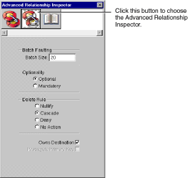

Table of Contents
Table of Contents  Previous Section
Previous Section
Adding Referential Integrity Rules
You can use the Advanced Relationship Inspector to add referential integrity rules for a relationship.

Figure 28. Advanced Relationship Inspector
Batch Faulting
Normally when a fault is triggered, just that object (or array of objects for a to-many relationship) is fetched from the database. You can take advantage of this expensive round trip to the database by batching faults together. The value you type in the Batch Size field indicates the number of faults for the same relationship that should be triggered along with the first fault. For more discussion of batch faulting, see the class specification for EODatabaseContext in the Enterprise Objects Framework Reference.
Optionality
This field lets you specify whether a relationship is optional or mandatory. For example, you could require all departments to have a location (mandatory), but not require every employee to have a manager (optional).
Delete Rule
This field lets you specify the delete rules that should be applied to an entity that's involved in a relationship. For example, you could have a department with multiple employees. When a user tried to delete the department, you could:
Owns Destination
The Owns Destination checkbox lets you set a source object as owning its destination objects. When a source object owns its destination objects and you remove a destination object from the source object's relationship array, this also has the effect of deleting it from the database (alternatively, you can transfer it to a new owner). This is because ownership implies that the owned object can't exist without an owner-for example, line items can't exist outside of a purchase order.
Propagate Primary Key
The Propagate Primary Key checkbox lets you specify that the primary key of the source entity should be propagated to newly inserted objects in the destination of the relationship. This is typically used for an owning relationship, where the owned object has the same primary key as the source. For example, in the Movies database the TalentPhoto entity has the same primary key as the entity that owns it, Talent.
Table of Contents  Next Section
Next Section